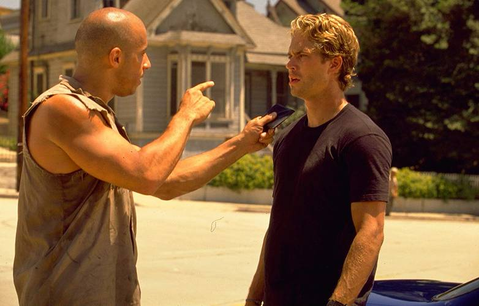

+Velozes, + Furiosos
"Mais Velozes e Mais Furiosos" (2 Fast 2 Furious) é o segundo filme da franquia "Velozes e Furiosos", lançado em 2003 e dirigido por John Singleton. Aqui está um resumo do enredo: O filme segue a história de Brian O'Conner (interpretado novamente por Paul Walker) depois dos eventos do primeiro filme. Brian está agora fora da polícia e vive em Miami, onde participa de corridas de rua. No entanto, ele é capturado pela polícia devido a suas atividades ilegais.

Em vez de ser preso, Brian é recrutado pelo agente do FBI Markham (interpretado por James Remar) para uma missão secreta. Ele se une ao ex-colega Roman Pearce (interpretado por Tyrese Gibson) para derrubar um empresário do crime chamado Carter Verone (interpretado por Cole Hauser), que está envolvido em lavagem de dinheiro. Brian e Roman concordam em participar de uma série de corridas para ganhar a confiança de Verone. Eles contam com a ajuda da agente secreta Monica Fuentes (interpretada por Eva Mendes), que está disfarçada trabalhando para Verone. A trama se desenrola com corridas emocionantes, traições e confrontos com Verone e sua organização criminosa. Brian e Roman acabam trabalhando juntos para derrubar Verone e entregar justiça.
.jpg)